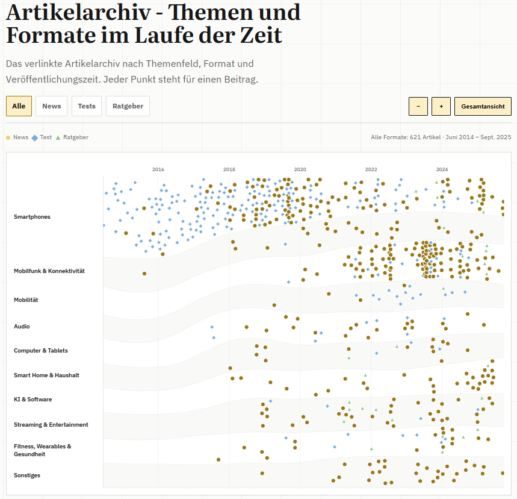

Bei meinen Arbeitsproben stand ich in der Vergangenheit immer wieder vor einem Problem: Wie bekommt man die Varianz der Inhalte in eine klare Darstellung und wie erreiche ich meine Ziele der Darstellung - Entwicklung und Eventerfahrung zeigen? Vor kurzem habe ich mich diesem Problem gestellt und musste dabei einen wilden Mix aus Inhalten bändigen. Doch das Projekt startete mit einigen groben Enttäuschungen.
Will man sein journalistisches Wirken festhalten oder dauerhaft sichtbar machen trifft man schnell auf Hindernisse. Bei mir sind es vor allem drei. Im Online-Journalismus ist es üblich, Content nicht dauerhaft bereitzuhalten. Klar liegen viele Artikel noch in Archiven, aber im Frontend und per Suchmaschine findbar sind nach einigen Jahren nur noch solche Artikel, die eine lange Halbwertzeit besitzen. Das zweite Problem ist der dynamische Medienmarkt. Wenn Angebote verändert werden, wo Besitzer wechseln oder in Zeiten, in denen sich Marken oder Technologie ändern, ist wenig Platz für Nostalgie und die Pflege alter Datenbestände. Und das gilt für Blog-Beiträge, Magazin-Artikel oder auch Video- und Audiomaterial. Das ist selbstverständlich und nötig. Für eine nachhaltige journalistische Spur, die man hinterlassen will, bringt das aber Probleme mit sich. Das dritte Problem ist das Medium selbst. Einige meiner ersten Zeitungsartikel habe ich noch als Seiten-PDF aus der digitalen Produktion der Zeitung. Doch nichts ist älter als die Zeitung von heute Morgen und damit sind außer in den Verlagen selbst nur noch wenige Exemplare der Druckwerke verfügbar. Dazu sind sie nicht verlinkbar. Also muss man das Werk selbst als Nachweis in das eigene Archiv stecken. Doch die Inhalte gehören einem nicht selbst.
Aus all den Gründen habe ich mich im ersten Schritt auf meine webbasierten Texte und neuere Audio-Beiträge konzentriert. Damit habe ich die Menge an Medienarten vorerst auf zwei reduziert. Bei meinen wenigen Auftritten in Podcasts war die Darstellung also einfach und ich konnte sie komplett als Kacheln mit eingebundenem externen Player und Verlinkung zur jeweiligen Folge einbetten.
Große Datenmengen müssen strukturiert werden
Bei meinen Online-Artikeln wurde es komplizierter. Ich habe mithilfe eines Freundes und der KI eine komplette Liste der noch online sichtbaren Artikel erstellt. Diese habe ich dann mit verschiedenen Charakteristika ausgestattet, um einen Überblick zu bekommen, welche Artikel wie darzustellen sind. Der Fokus lag dabei vor allem auf Klarheit der Darstellung und Nachvollziehbarkeit meiner Entwicklung. Zum einen wollte ich darlegen, dass ich mich vom Smartphone-Spezialisten zum Allrounder entwickelt habe und zum anderen wollte ich meine große Erfahrung in der internationalen Event-Berichterstattung zeigen.
Für Letzteres liegt es nahe, die Artikel an den Ort des Events zu heften. Eine einfache Karte mit Markern der Orte des zugrunde liegenden Events leistet das. Was ich damit nicht verhindern konnte: Selbst mit dem Einsatz des Internet Archives konnte ich nur noch einen Bruchteil der Eventberichte zusammensammeln. Das Gros der Artikel sind mittlerweile nicht mehr an das jeweilige Event gebunden (weil sie zu ortsunabhängigen Tests weiterentwickelt wurden) oder sie sind nicht mehr online auffindbar.
Für die Nachvollziehbarkeit der Entwicklung meiner Themen war die Datenlage nicht ideal, aber deutlich besser. Ich kann hier auf über 600 Artikel zugreifen und habe diese mit KI-Unterstützung nach Themen und nach Format (Test, Ratgeber, News) geordnet. Damit waren es schon zwei Dimensionen, die ich in meiner Darstellung unterbringen musste. Dazu kam der Faktor Zeit. Zur besseren Orientierung und weil ich davon ausgehe, dass die meisten Menschen diese Lesart verinnerlicht haben, habe ich die Zeit auf die X-Achse gelegt. Die Themen habe ich auf die Y-Achse aufgetragen und das Format durch unterschiedliche Zeichen dargestellt.
Der Kniff: dynamische Anpassung der Darstellung
Der erste Versuch, alle Daten in dieses Schema zu pressen, war ein erhellender und vorhersehbarer Fehlschlag. Denn die schiere Masse an Smartphone-Artikeln zum Start meiner Laufbahn hat die starre Darstellung gesprengt. Dazu lagen die Artikel-Marker oft übereinander und konnten nicht mehr geklickt werden. Kurz und gut: Die Themenbänder mussten sich, wie auch die zeitliche Ausdehnung, dynamisch an den Inhalt und den Zoombereich anpassen.

Drei Versuche später hielt die Darstellung auch in Randbereichen und in allen Zoomstufen stabil zusammen und brach optisch wie funktionell nicht auseinander. Das Ergebnis ist ein zeitlich zoombares Artikelarchiv, das immer genug Platz für Artikel bietet und die Entwicklung der Themenbreite als Ganzes darstellt.
Die Darstellung von Daten ist also nicht nur ein technisches Problem, sondern muss ein echtes Problem lösen. Manchmal heißt das, dass man eine Darstellung vereinfachen muss, überflüssige Daten aussortiert oder auslagert und manchmal heißt es auch, strukturiert darüber nachzudenken, wo das eigentliche Ziel ist. Alle Daten in eine Darstellung zu schmeißen und eine möglichst vollständige Abbildung zu bekommen, kann fancy aussehen und Eindruck schinden, aber auch verwirren, überfordern oder die Zugänglichkeit einschränken.